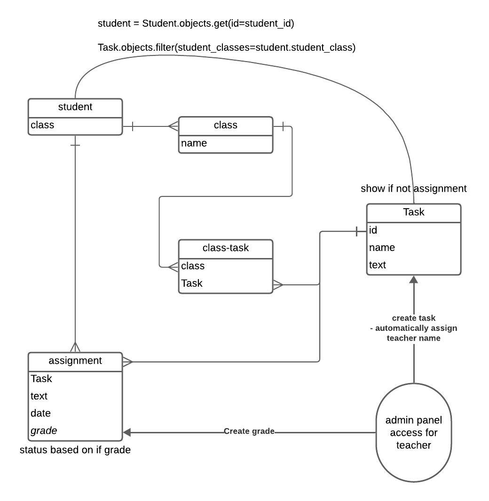

Доска домашних заданий¶
О домашнем задании должна храниться следующая информация:
- предмет
- преподаватель
- дата выдачи
- период выполнения
- текст задания
- информация о штрафах
Необходимо реализовать следующий функционал:
- Регистрация новых пользователей.
- Просмотр домашних заданий по всем дисциплинам (сроки выполнения, описание задания).
- Сдача домашних заданий в текстовом виде.
- Администратор (учитель) должен иметь возможность поставить оценку за задание средствами Django-admin.
- В клиентской части должна формироваться таблица, отображающая оценки всех учеников класса.
Структура сервиса¶
Навигация по сайту¶
/
/account
| / # Личная информация
| /register # страница регистрации
| /login # эндпоинт для входа в аккаунт
| /logout # эндпоинт для выхода из аккаунта
/tasks
| / # список
| /<int:id> # конкретное задание
| /submit # эндпоинт для сдачи задания
| /edit # эндпоинт для реадктирования
| /pending # сданные задания без оценки
/grades
| / # свои оценки
| /all # оценки класса
/admin # панель для учителей
/about # задание
Модель данных¶

Запуск¶
Первый запуск¶
pip install -r requirements.txt
docker run --name pg-container -e POSTGRES_PASSWORD=notsecred -d -p 5432:5432 postgres
python manage.py runserver localhost:8000
Дальнейшие запуски¶
docker start postgres-container
python manage.py runserver localhost:8000
Векторы доработки¶
- Переделать работу с шаблонами, чтобы не зависеть от контекста
- Вынести логику регистрации и входа в отдельное приложение
- Доработать ui/ux
- Добавить плагинов в админ-панель для удобного редактирования текстовых данных
- Написать docker-compose для удобного деплоя